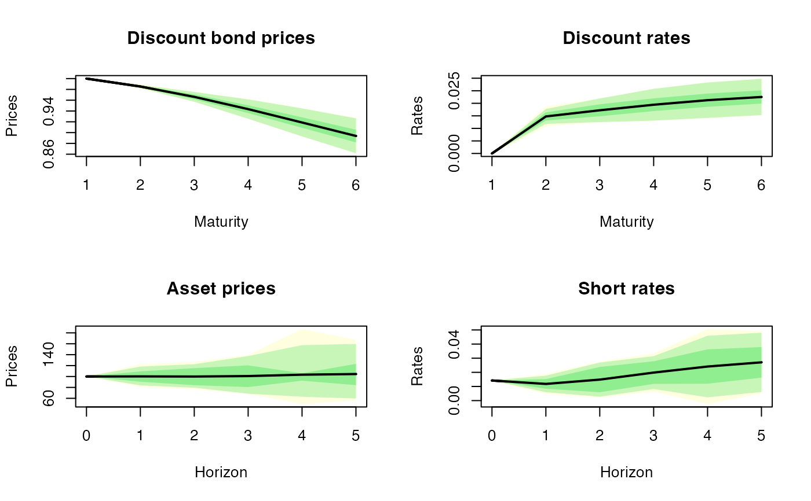

simulate_bsg2plus.RdSimulate Black-Scholes-G2++ model
simulate_bsg2plus(n = 100L, t0 = 1L, horizon = 5L, K = 95)a list with the simulated short rate, asset price and discount bond price
require(esgtoolkit)
#> Loading required package: esgtoolkit
#> Loading required package: ggplot2
#> Loading required package: gridExtra
#> Loading required package: reshape2
#> Loading required package: VineCopula
#> Loading required package: randtoolbox
#> Loading required package: rngWELL
#> This is randtoolbox. For an overview, type 'help("randtoolbox")'.
#> Loading required package: zoo
#>
#> Attaching package: ‘zoo’
#> The following objects are masked from ‘package:base’:
#>
#> as.Date, as.Date.numeric
#> Loading required package: data.table
#>
#> Attaching package: ‘data.table’
#> The following objects are masked from ‘package:zoo’:
#>
#> yearmon, yearqtr
#> The following objects are masked from ‘package:reshape2’:
#>
#> dcast, melt
#>
#>
#> This is version 1.8.0 of esgtoolkit. Starting with 1.0.0, package renamed as: 'esgtoolkit' (lowercase)
#>
#>
#>
#> Attaching package: ‘esgtoolkit’
#> The following object is masked from ‘package:simulatetimeseries’:
#>
#> debug_print
sims <- simulatetimeseries::simulate_bsg2plus(t0=1, n=10L,
horizon = 5L)
#> Warning: subscript out of bounds (index 1 >= vector size 1)
#> Warning: subscript out of bounds (index 1 >= vector size 1)
#> Warning: subscript out of bounds (index 1 >= vector size 1)
#> Warning: subscript out of bounds (index 1 >= vector size 1)
#> Warning: subscript out of bounds (index 1 >= vector size 1)
#> Warning: subscript out of bounds (index 1 >= vector size 1)
#> Warning: subscript out of bounds (index 1 >= vector size 1)
#> Warning: subscript out of bounds (index 1 >= vector size 1)
#> Warning: subscript out of bounds (index 1 >= vector size 1)
#> Warning: subscript out of bounds (index 1 >= vector size 1)
par(mfrow=c(2,2))
esgtoolkit::esgplotbands(sims$discount_bond_prices, main="Discount bond prices", xlab="Maturity", ylab="Prices")
esgtoolkit::esgplotbands(window(sims$discount_rates, start=1), main="Discount rates", xlab="Maturity", ylab="Rates")
esgtoolkit::esgplotbands(sims$asset_price, main="Asset prices", xlab="Horizon", ylab="Prices")
esgtoolkit::esgplotbands(sims$short_rate, main="Short rates", xlab="Horizon", ylab="Rates")
